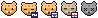
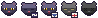
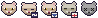
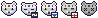
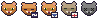

图标是这只猫自己的品种配色画的 18×18 像素猫头，五档状态各改两处。
下面所有图都是同一份 1 倍 PNG（18 像素高）用整数最近邻放大出来的，和真机上菜单栏里的形状完全一致。 奶牛猫那一行用的是你现在这只（小米，seed 1060975906），其余品种用同一颗种子好比较结构差异。
左起：正常 · 睡着 · 饿了 · 生病 · 已离开
| 品种 | 深色菜单栏底 | 浅色菜单栏底 |
|---|---|---|
| 奶牛猫 （小米） | ||
| 橘猫 |  |
|
| 黑猫 |  |
|
| 布偶猫 | ||
| 德文卷毛 |  |
|
| 美短 |  |
|
| 阿比西尼亚 |  |